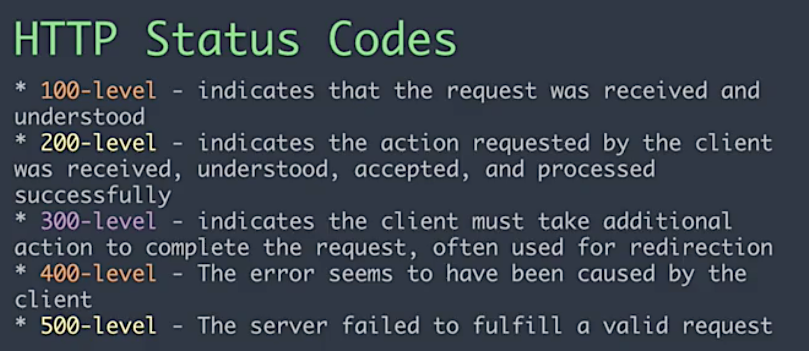

Introduction to Async and JSON
How do JavaScript and HTML work together?
1. Static content and user interactions!
- Think a simple website
- Everyone accesses the basic content and functionality of a web page, using any browser or Internet connection
- The website can respond to user driven events. This can update the UI
How do JavaScript and HTML work together?
2. Dynamic Content and More Data
- Think a complicated web applications
- Everyone can log in and create their own accounts. This will load specific data depending on the user interactions. The "shell" of the app is the same for all users, but the content is dynamic.
- What are some examples?
1) Static Content

A click from the user changes the UI, but the data is the same of all users.
2) Dynamic Content
Adding Data (often user data)!

New unique data is added specifically for the user who is currently using the app.
Where is user data stored?

In databases across the Internet!
Remember!
Backend languages handle the requests for data about users. Databases hold all of the information about our users.
What happens if that language is different from JavaScript? And how do we make those requests?

Sending/Receiving Data Across the Internet
JSON = JavaScript Object Notation
- JSON is all about transmitting data objects
- This is a way to store and send data!
- JSON can be read by all sorts of backend platforms and databases.
How does JSON work?
- Using Key/Value pairs
- Keys must be stored with quotes (unlike JS Objects)
- Value can be the following data types: Number, String, Boolean, Array, Object, null
- Resembles objects in JS
- Validate @ JSONLint.com
Example
{
"firstName": "Jane",
"lastName": "Smith",
"address": {
"streetAddress": "425 2nd Street",
"city": "San Francisco",
"state": "CA",
"postalCode": 94107
},
"phoneNumbers": [
"212 732-1234",
"646 123-4567" ]
}
JSON Exercise Time!
Follow this link

What does asynchronous mean?
Asynchronous technologies enable users to access information or communicate at different points of time, usually at the time of choice of the user.
Asynchronous Analogy
A bank teller that only serves one person can only serve that one person at a time
VERSUS
Multiple tellers who can see multiple people but all access the same back room.
The traditional data-driven web application is written so that it:
- Displays a webpage
- Waits for user interaction
- Asks the server for data
- Reloads the webpage
Sad Users
This has the effect that the user has "down time" - there is a period of time where they can't interact with the webpage at all

Async in the Wild

As you load more listings on Airbnb, you are sending requests for more data.
Web 1.0 and User Interaction
Web 2.0 and User Interaction

Importance of Async for Web 2.0 Programming
- The user can still interact with other parts of the page while one part is loading.
- The user can selectively load the content they're interested in.
- This is arguably the most important part of Web 2.0 programming!
Web 1.0 vs. Web 2.0
|
|
| Technologies Used: | Technologies Used: |
|
|
Requests and Responses

Requests and Responses
- Front-End: Hey, Back-End! Here's my credentials. Can I get some data? How about books on AJAX?
- Back-End thinks about it, decides how to handle request...looks in database, searches...
- Back-End: 200 OK, here are some books on AJAX!
- Front-End: Thanks! I'm going to make an online bookshelf with the data!
How does this communicating take place?
There are different methods for making async requests, and new ones are being added all the time.
We will talk about 2: AJAX and Fetch

AJAX
AJAX = "Asynchronous JavaScript and XML."
- AJAX is a technique for creating fast and dynamic web pages.
- You can update parts of your web page, without reloading the whole page!
- Examples of applications using AJAX: Google Maps, Gmail, YouTube, and Facebook.
AJAX
- Allows for asynchronous data transfer between a webpage and a web server.
- Javascript tells the browser to retrieve a particular URL and send the data back to the webpage.
Let's talk about this diagram

XMLHttpRequest
XMLHttpRequest (XHR) is an API (we will cover these next) available to web browser scripting languages such as JavaScript. It is used to send HTTP or HTTPS requests to a web server and load the server response data back into the script.
- Don't worry about the XML part
- We can just use HTML or JSON!
- Click here to learn more
Anatomy of an XMLHttpRequest
// instantiate a new request
var request = new XMLHttpRequest();
// add event listeners
request.addEventListener('load', function () {
// transform a string into a usable object
console.log(JSON.parse(request.responseText));
});
request.open('get', '/path/to/api', true);
request.setRequestHeader('Content-type', 'application/json');
request.send();
BUT! We don't need to write all that code...
jQuery and AJAX
We can use the jQuery $.ajax function.
$.ajax({type: "GET",
url: "filename.json",
dataType: "json",
success: function(data) { },
error: function(xhr, status, e) { }
});
Using jQuery for everything
$.ajax({type: "GET",
url: "books.json",
dataType: "json",
success: function(books) {
for (var i = 0; i < books.length; i++) {
var book = books[i];
var p = $('<p>');
p.html(book.title + ' by ' + book.author);
$('body').append(p);
}
},
error: function(xhr, status, e) {
console.log(status, e);
}
});
Remember!
jQuery is just a library, written by human beings. Use it because it saves you time, but don't rely too hard on it!
Debugging AJAX Requests
- Open the Dev Tools and go to Network. Select "XHR" filter to see all XMLHttpRequests made.
- Refresh the page
- See what the request responded with by clicking one of the elements and then its "Response" tab.
- Explore this tab! It will teach you so much about what's in requests and responses. (Google everything you don't understand.)
- Visit this link again.
Server Status Responses
AJAX + Servers
Looking at "GET" and "POST"
$.ajax({type: "GET",
url: "/api/books",
dataType: "json",
data: {'sortBy': 'author'},
success: processBooks
});
$.ajax({type: "POST",
url: "/api/book/new",
dataType: "json",
data: {'title': 'I, Robot', 'author': 'I. Asimov'}
success: processBoooks
});
Important AJAX Reminders
- Cross domain requests have restrictions
- Multiple AJAX requests don't return in order
- Hard to transfer files
- Browsers can over-cache/under-cache requests
- Can't transfer binary content
Exercise using an API
We will check out this example using Meetup's API Click here
What is happening?
(Let's add the Chrome extension JSON formatter)
Let's display the data!
$.ajax({
type:"GET",
url:"https://api.meetup.com/2/cities",
success: function(data) {
$('.text').html('');
for (var i = 0; i < data.results.length; i++){
var place = data.results[i].city + "," +
data.results[i].state;
$(".text").append("" + place + "
"):
}},
What happens?
Ajax exercise
What are other ways to be async in JS?
Fetch Exercise
- Make a new source folder for a website.
- Allow the user to enter a song title and artist.
- Call this API.
- Get the lyrics.
- Display to your user!
How JS Works!
Great Resources
THE END
Thank you for your attention!